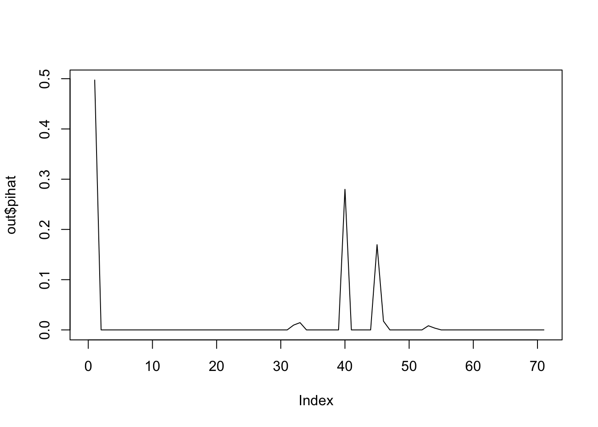

This documentation provides a brief introduction to mixopt. All functions can be imported from loading ‘mixopt.R’. First of all, set working directory as a cloned repository on your local machine.
# setwd("~/path/to/this/file");
# for instance, this file's directory is "~/git/mixopt/code" on my computer.
getwd();## [1] "/Users/Yskim/git/mixopt/analysis"source("mixopt.R");The following code will install ‘rjulia’ package if you don’t have it. You must have julia 0.5.2 for compatibility (Please see rjulia repository for details). You may install julia package for the first time by setting julia_package_install = TRUE.
mixopt_init(julia_package_install = FALSE);## Loading required package: rjulia## R package 'rjuila' installed
## Julia initiaized
## Working directory has changed in JuliaOnce installed and initialized, check if the following code works. Precompiling…
out = mixopt_ex(100,2);## sample z from 0.5 * N(0,1) + 0.5 g
## compute likelihood : 1.088 sec
## convex programming : 9.752 secLet’s try again…
out = mixopt_ex(100000,1.1);## sample z from 0.5 * N(0,1) + 0.5 g
## compute likelihood : 0.481 sec
## convex programming : 0.176 secplot(out$pihat,type='l',xlim = c(0,length(out$pihat)));
This R Markdown site was created with workflowr